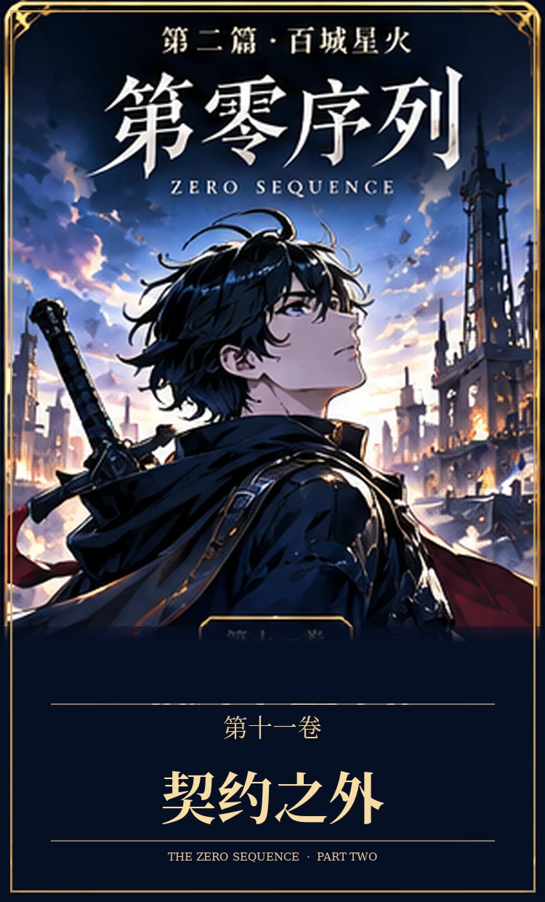
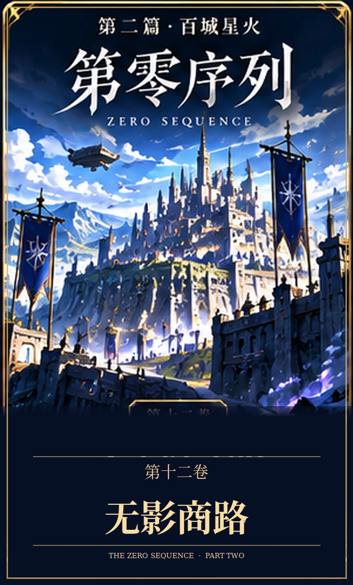
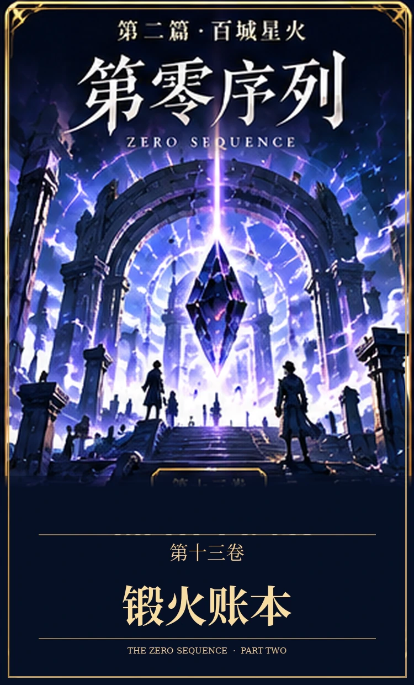
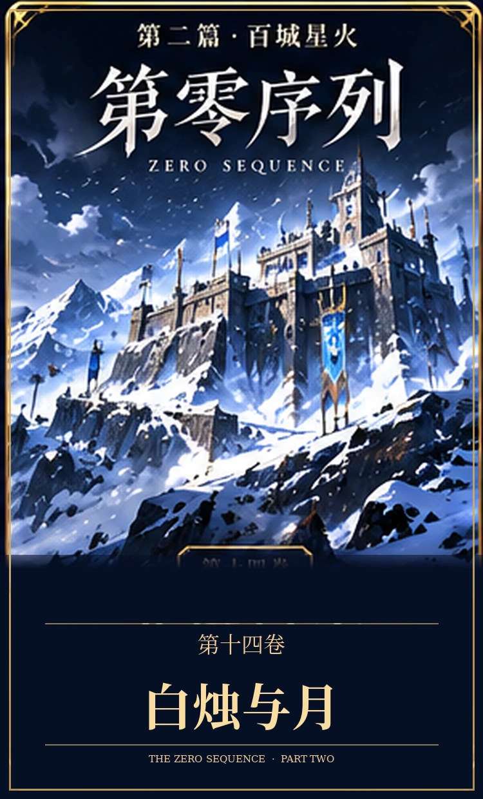
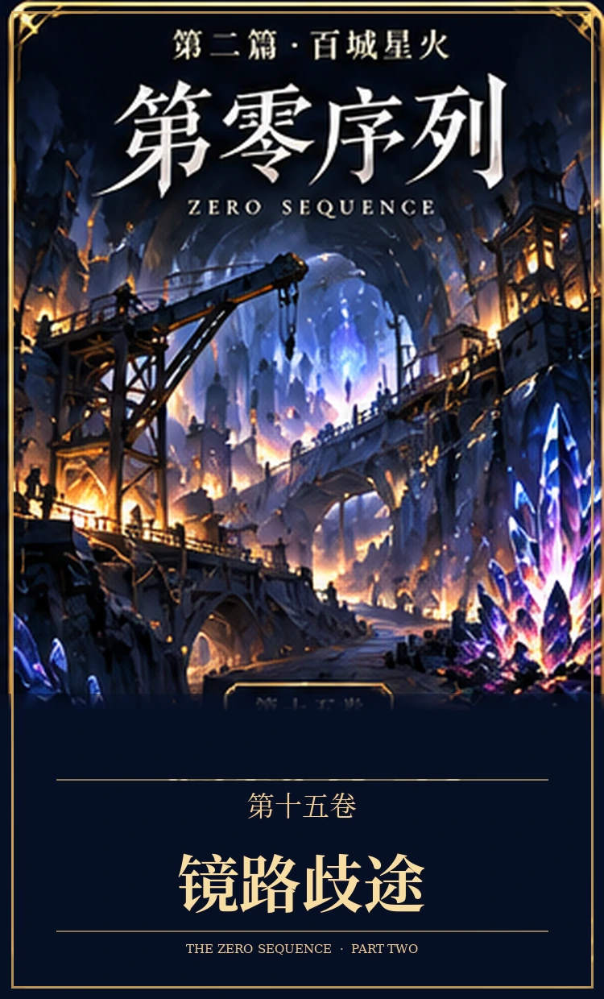
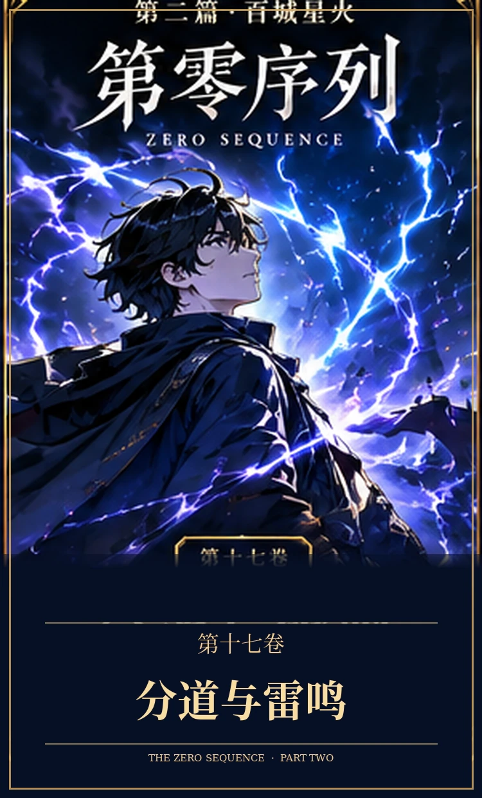
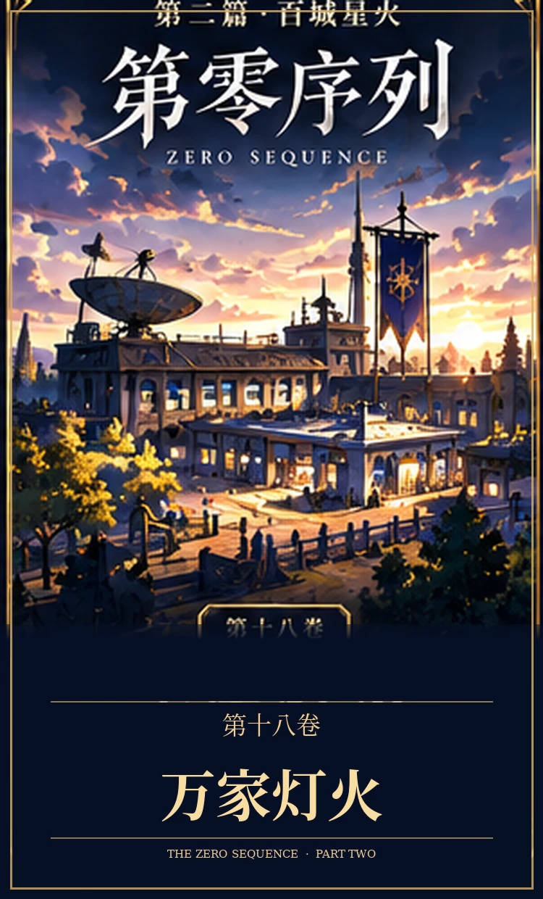
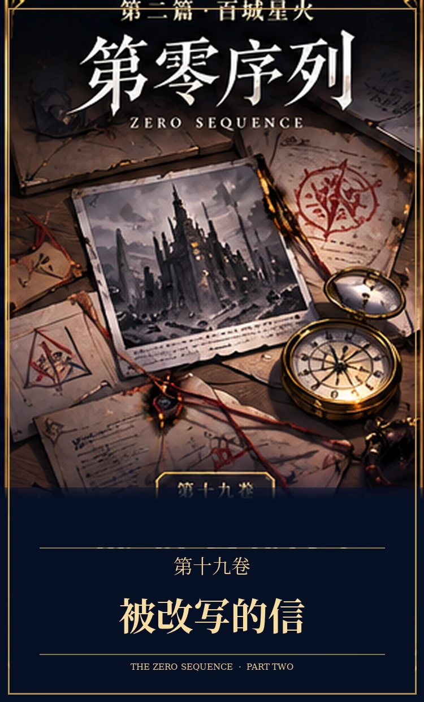

首页 / 第二篇
PART TWO · VOLUMES 11—20
第二篇
百城星火
从西境商路走向百城协作，顾长渊与伙伴们在职业成长、独立探索、真实经营与相互信任中继续前行。玩家与NPC拥有各自的人生，现实深渊方舟逐步建立，世界融合的真正秘密仍在前方。
第二篇 · 十卷目录
与第一篇共用十卷封面模板及章节解锁状态。全部独立封面已上传；未解锁的卷隐藏简介，但不限制阅读已发布的章节。
读取本篇进度…
第二篇 · 百城星火第零序列ZERO SEQUENCE 第十一卷契约之外 第二篇 · 第11卷第十一卷《契约之外》
对NPC的责任与玩家的生计首次正面冲突，现实安全屋进入筹划。

第二篇 · 百城星火第零序列ZERO SEQUENCE 第十二卷无影商路 第二篇 · 第12卷第十二卷《无影商路》
无影商路的谣言、伪造情报与职业玩家的公开竞争。

第二篇 · 百城星火第零序列ZERO SEQUENCE 第十三卷锻火账本 第二篇 · 第13卷第十三卷《锻火账本》
赤纹矿鉴定、武器重铸、工匠成长、资本价格战与现实仓储合同落地。

第二篇 · 百城星火第零序列ZERO SEQUENCE 第十四卷白烛与月 第二篇 · 第14卷第十四卷《白烛与月》
苏紫璃的医疗研究，以及林知夏与陈宇恒的独立生活线。

第二篇 · 百城星火第零序列ZERO SEQUENCE 第十五卷镜路歧途 第二篇 · 第15卷第十五卷《镜路歧途》
镜路旧档、银月的选择与玩家和NPC之间的普通感情。
 第二篇 · 百城星火第零序列ZERO SEQUENCE
第十六卷北境长墙
第二篇 · 第16卷
第二篇 · 百城星火第零序列ZERO SEQUENCE
第十六卷北境长墙
第二篇 · 第16卷第十六卷《北境长墙》
戴玄岳与林烈独立指挥北境战斗，胜败留下真实代价。

第二篇 · 百城星火第零序列ZERO SEQUENCE 第十七卷分道与雷鸣 第二篇 · 第17卷第十七卷《分道与雷鸣》
凌天曜的雷系试炼，以及伙伴们逐步学会分享判断权。

第二篇 · 百城星火第零序列ZERO SEQUENCE 第十八卷万家灯火 第二篇 · 第18卷第十八卷《万家灯火》
现实据点启动，普通员工与玩家面基让世界有了生活。

第二篇 · 百城星火第零序列ZERO SEQUENCE 第十九卷被改写的信 第二篇 · 第19卷第十九卷《被改写的信》
前世相似的陷害线索重新出现，情报必须靠证据核验。
 第二篇 · 百城星火第零序列ZERO SEQUENCE
第二十卷星火未熄
20 — COMPLETE
第二篇 · 百城星火第零序列ZERO SEQUENCE
第二十卷星火未熄
20 — COMPLETE第二十卷《星火未熄》
跨城协作、剑士胜利和深渊方舟的第一套可运行秩序。
篇章编排规则：每十卷组成一篇，第一篇第1—10卷，第二篇第11—20卷，第三篇第21—30卷。今后的分篇卷目统一使用第一篇的星空配色、金色标题、竖版卷面、两行简介与按阅读进度解锁的目录；新篇尚未完成前不提前标记完结。游戏等级上限仍为Lv.200，世界融合及最终秘密不提前公开。